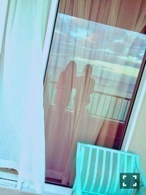
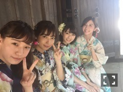

| 2016/08 04 Thu | 斎藤ちはる 堂々と好きと言える趣味。(´>∀<｀)ゝ |
ちはるーむへようこそ\( ˆoˆ )/
ドーナツを食す、わたし。
甘いもの好きなんだ(｡･o･｡)ﾉ
-------------------------♡
今日の #chihashot は
数多めでいくよ〜！！
1枚目。
グアムのホテルのベランダで
撮った写真！
海の青と、
空の青って
色が違うんだなーと
改めて気付けた1枚！
私、夕暮れ時の
オレンジ色の雲が大好きなんだ！
2枚目。
雲の下が全部平面に、
一直線になってるのが
神秘的で写真に収めました♡
夏だな〜って思う。
この写真撮った時
愛未と一緒に居たんだけど、
本当に空とか写真が好きだね〜
としみじみと言われた！笑
空が広いところでは
空見ながら歩いてしまうくらいだよ〜
(事故には気を付けるよ！大丈夫。)
3枚目

グアムにいる時に、
撮影の前に愛未と
窓に映る私たちを撮った写真。
わたし的にとてもお気に入り！
カーテンが揺れるところとか、
窓に映る後ろの空と海とか。
東京にいるとなかなか撮れない
写真だからね\( ˆoˆ )/
今日はまたもや
沢山写真について語らせてもらいました♪
好きな事を堂々と好き！と言ってみることは
大切だと思ってます( ◦˙ ˙◦ )
皆さんの、堂々と好き！
と言える趣味はありますか？♪
-------------------------♡
♬ ChihaMusic
「Liar」back numberさん
この曲は先日行ったライブの
1曲目で、とても興奮したのを思い出す！
登場シーンって、凄い感動するし
心に残るよね\( ˆoˆ )/
今でも頭に浮かんでくるよ〜
皆さんにとって、私たちのライブも
今でも頭に浮かんでくるように
なりますように！！

浴衣ではんなり。
おやすみ♡
斎藤ちはる